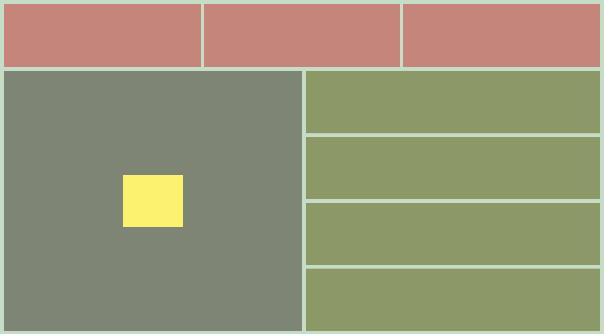

Flexbox
The flexbox is one method we can use to start to create dynamic (flexible) layouts, grids, and compositions on our web pages. A flexbox has two basic parts: the flex container and flex items. We can turn any element into a flex container by giving it the property:
Any elements contained within this element (its children) will be considered flex items. Flex items can also be given display:flex; and will become flex containers themselves, allowing us to nest dynamic containers within dynamic containers.
For the purpose of this tutorial, we'll be focusing on the flex container and we'll be referencing this guide:
After having gone through that guide, let's practice by trying to recreate this image using flexbox.
Having finished the exercise composition, make another small website sketch implementing flexbox in some way. Maybe it's another composition or maybe it's some imagined future interface — it can be as simple or complex as you want. (If you need some more structure: imagine a landscape and then try to draw that landscape with just rectangles, circles, and color — organized with flexbox of course.)
Here's an example of what I mean by "small sketch":